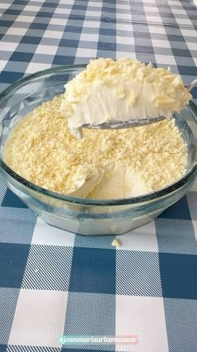

Doces · Musses
Musse brigadeiro branco

Ingredientes
- 1 lata de leite condensado
- 3 ovos
- 1 lata de creme de leite
- 4 colheres (sopa) de açúcar
- Biscoitos de chocolate para decorar
Modo de preparo
- Leve ao fogo o leite condensado e as gemas peneiradas até desgrudar do fundo. Tire do fogo e misture o creme de leite.
- Bata as claras em neve com o açúcar até suspiro, misture ao creme, distribua em taças e gele 2 horas. Decore com biscoitos.